西工大网络空间实战攻防能力训练（Actual Combat Ability Training of Cybersecurity Offense-defense Confrontation）系列实验
作业 1
搜寻活跃主机
使用 nmap 搜寻网络内活跃的主机。
使用如下命令进行扫描：
1 | nmap -sP 192.168.186.129/24 #虚拟机IP |
进行ping扫描，打印出对扫描做出响应的主机，不做进一步测试(如端口扫描或者操作系统探测)
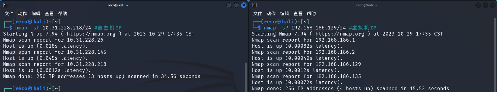
192.168.186.2 为 Kali 机的网关，192.168.186.135 为 Win XP 的 IP 地址。
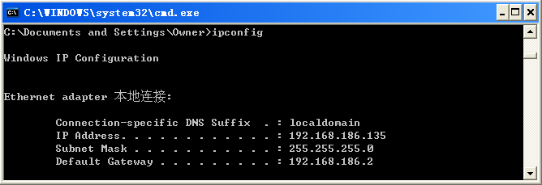
（Win 7 扫不到）
扫描端口信息和服务版本号
使用 nmap 扫描目标主机端口信息和服务版本号。
在 root 身份下，使用如下命令扫描 Win XP 主机的活跃的端口信息：
1 | nmap -sSV 192.168.186.135 |
nmap -sS使用频率最高的扫描选项。SYN扫描，又称为半开放扫描，它不建立一个完全的TCP连接，执行得很快。（显示mac ip port protocol）
-sV选项可以用来识别服务的版本
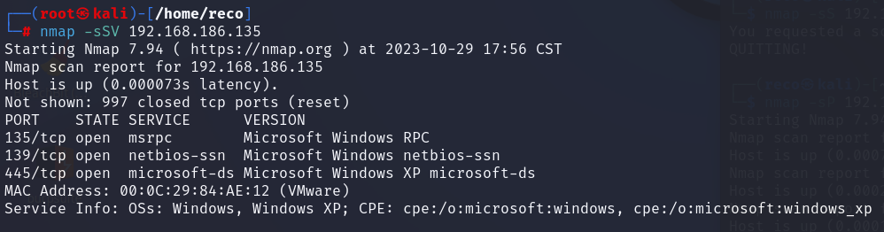
Win XP 主机开启了 TCP 的 135（Microsoft RPC）、139（NetBIOS 会话服务） 和 445（服务信息块）端口，三个端口的服务版本分别为 Microsoft Windows RPC、Microsoft Windows netbios-ssn、Microsoft Windows XP microsoft-ds。
扫描指定端口
使用 nmap 扫描局域网内指定的几个端口(80,21,22,3389)，
端口扫描方式为 SYN 半连接方式。
在 root 身份下，使用如下命令扫描指定端口：
1 | nmap -sS 192.168.186.129/24 -p 80,21,22,3389 |
-p选项可以实施端口扫描
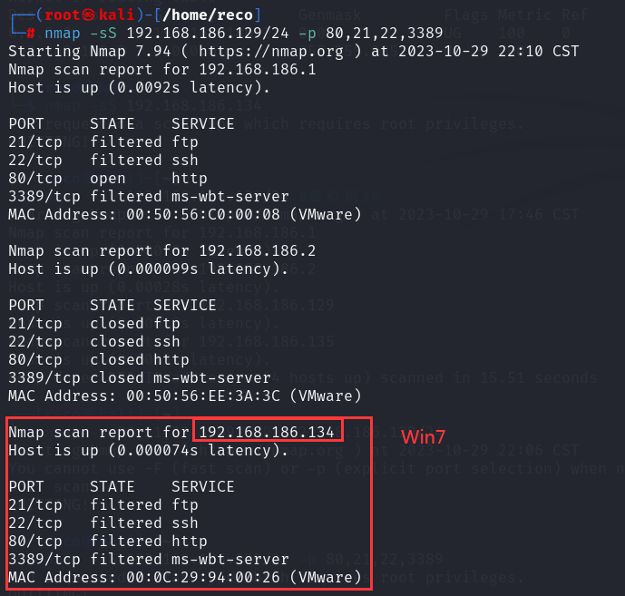
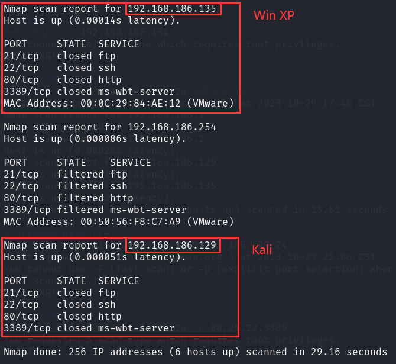
可以看到，Win XP 和 Kali 机的 80、21、22、3389 端口均处于可访问但已关闭的状态，而 Win7 的这四个端口处于“Filtered”状态。由于 Win7 开启了防火墙，所以可以判断是被过滤了。
查找域名相关信息
使用两种以上方法实现域名相关信息的查找。
（1）使用 whois 工具
1 | whois baidu.com |
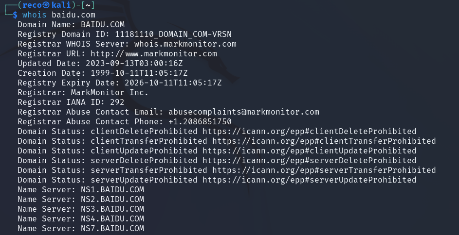
（2）使用 DMitry 工具
1 | dmitry -w baidu.com |
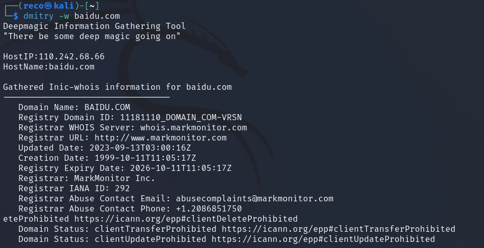
（3）dnsenum
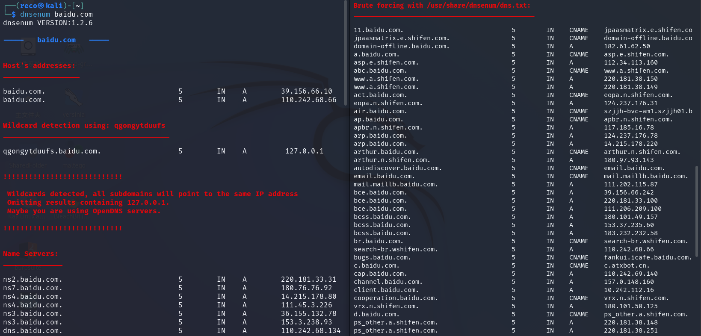
（4）host
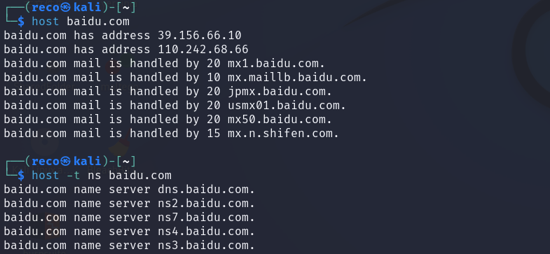
作业 2
whois 查询与反查
使用 站长之家 对新浪域名 sina.com.cn 进行 DNS whois 查询，再根据查询到的注册人、邮箱及手机电话等信息进行 whois 反查。
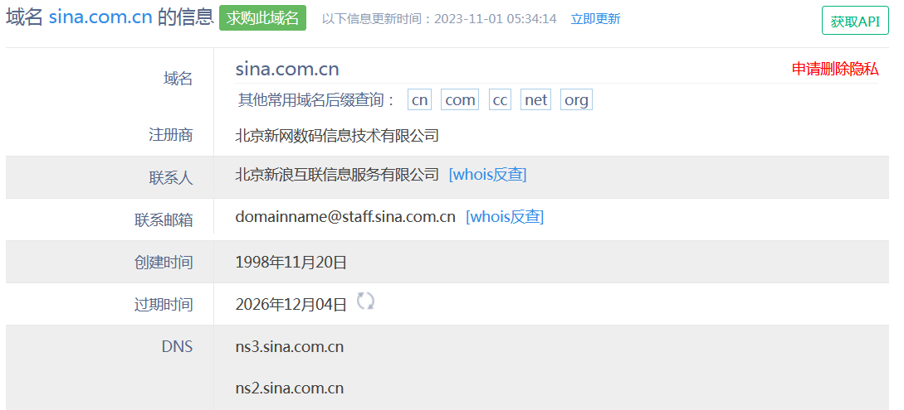
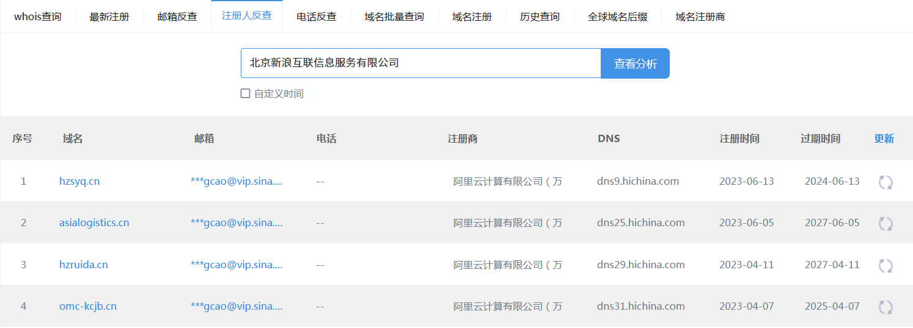
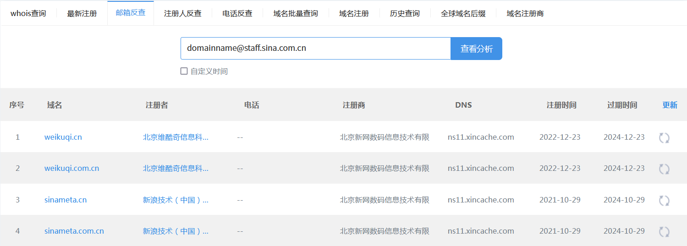
Maltego 信息搜集
使用 Maltego 搜集 Bill Gates 有关的邮箱信息；收集 baidu.com 的子域名信息。
在左侧 Entity Palette 中找到 Person 并拖动到图表中，修改其名字为 Bill Gates。单击右键，将显示所有可用的 Transform 列表，选择第二项 Email addresses from Person。
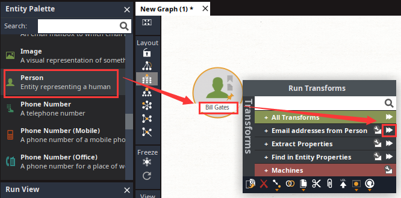
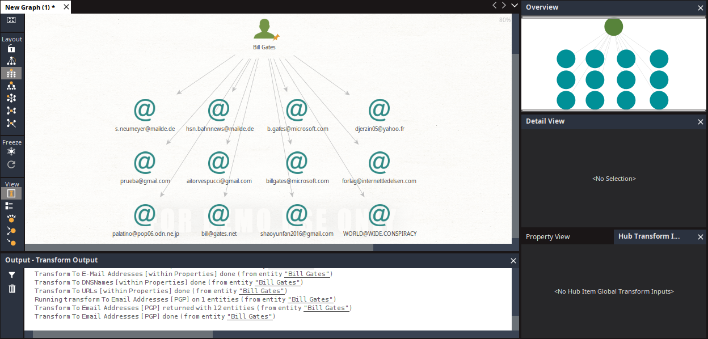
在 Entity Palette 中找到 Domain 并拖动到图表中，修改域名为 baidu.com。单击右键，选择 All Transforms → To DNS Name (interesting)[SecurityTrails]。
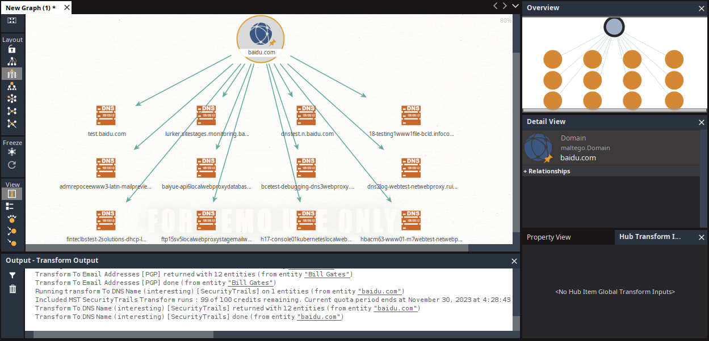
扫描主机、搜索域名信息
在 kali 中搜索活跃目标主机，并扫描其中某个 IP 地址对应的操作系统版本及其开放端口信息。搜索 sina.com 的域名信息，包括注册商、注册时间和注册地址等信息。
搜索活跃目标主机：
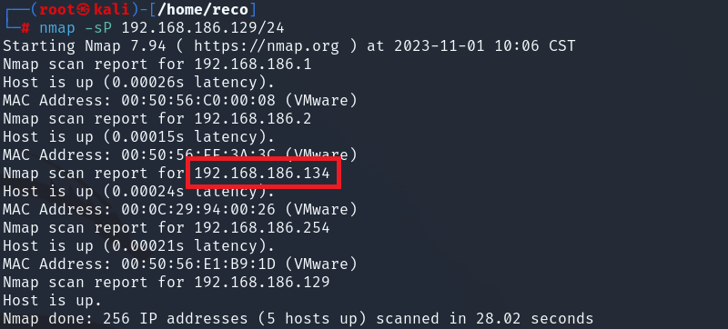
扫描 192.168.186.134（Win7 机） 的操作系统版本和开放端口信息：
1 | nmap -O 192.168.186.134 |
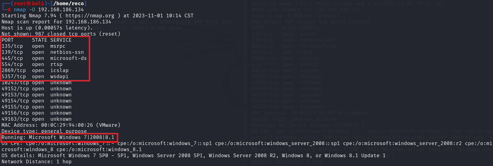
操作系统为 Microsoft Windows 7|2008|8.1。
开启的端口和服务有：135/msrpc、139/netbios-ssn、445/microsoft-ds、554/rtsp、2869/icslap、5357/wsdapi。
在 Maltego 中整理信息：放置 IP 地址、端口和服务，用箭头连接。
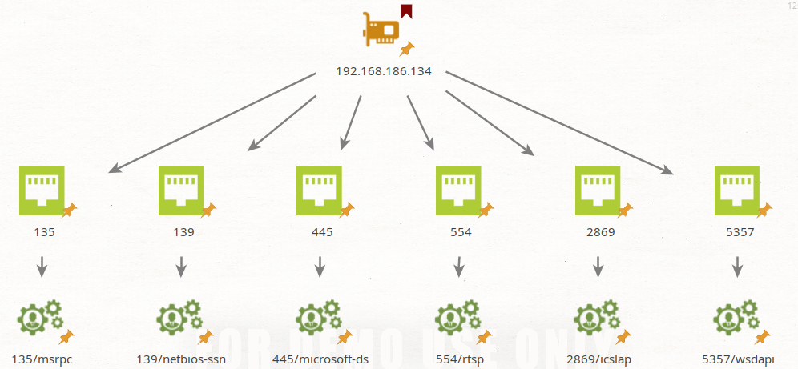
在 Maltego 的图表中创建 sina.com 域名，选择 To Entities from WHOIS[IBM Watson]：
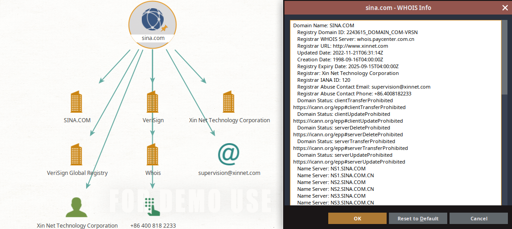
彩蛋
- 彩蛋图片：
- 作者：esai pid：25781816
- 来源：pixiv ID: 112163655